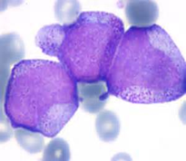

Responde la ficha de trabajo
FICHA INFORMATIVA
¿Qué son los glóbulos rojos?
Los glóbulos rojos son las células sanguíneas más numerosas. Estas células son las encargadas de transportar el oxígeno desde los pulmones hacia el resto de los órganos. Medir la cantidad de glóbulos rojos permite detectar ciertas enfermedades, como por ejemplo: la anemia.
Los valores normales de glóbulos rojos son:

¿Qué son los leucocitos?
Los leucocitos, también llamados glóbulos blancos, son un conjunto heterogéneo de células sanguíneas las cuales son ejecutoras de la respuesta inmunitaria, interviniendo así en la defensa del organismo contra sustancias extrañas o agentes infecciosos (antígenos). Se originan en la médula ósea y en el tejido linfático. Los valores normales de glóbulos blancos son:
Actividad 1:
Completa la tabla 1 considerando los valores mínimos y máximos de hematocritos (glóbulos rojos) y leucocitos (glóbulos blancos) en las diferentes etapas de la vida de una persona. Escribe las cantidades con todos sus dígitos.
Responde a las siguientes preguntas:
· ¿Qué características tienen los valores obtenidos?
___________________________________________________________________________________________________________________________________________________________________________________________________________________________________________________________________________________________________· ¿Cómo podríamos expresar de manera abreviada las cantidades muy grandes?
__________________________________________________________________________________________________________________________________________________________________________________________________________________________________________________________________________________________________________
Actividad 2:
Expresa los valores de glóbulos rojos y blancos de un hombre adulto y mujer adulta realizando conversiones de mm3 a ml y viceversa, luego completa la tabla 2.
Tabla 2: Registro de hematocritos y leucocitos de acuerdo a los valores mínimos
Recuerda que un ml (mililitro) representa la milésima parte de un litro; además, un ml es equivalente a un cm3.
1L= 1000ml
1L es equivalente a 1000cm3
1ml equivalente a 1cm3
Si en un centímetro (cm) hay 10 milímetro (mm) entonces en 1 cm3, ¿cuantos mm.3 hay?
Estableciendo la igualdad y elevando ambos extremos al cubo, obtenemos:
1cm = 10mm entonces (1cm)3 = (10mm)3
1cm3 = 1000mm3
Además, recuerda que: 1ml es equivalente a 1 cm3 y 1cm3 es equivalente a 1000mm3. Por lo tanto:
1ml es equivalente a 1000mm3
Margarita es una adolescente que ha ido al centro de salud más cercano para realizarse su descarte de anemia. Después de hacer la cola respectiva, le han extraído 20 ml de sangre y lo han colocado en un tubo de ensayo.
a) ¿Cuántos mm3 de sangre le han extraído a Margarita?
b) ¿Cuántos mm3 de sangre extraerá la enfermera a 3 pacientes?
c) ¿Cuánto mm3 extraerá a 10 pacientes?
d) Si al término de la mañana y después de atender a varios pacientes, la enfermera ha extraído un litro de sangre, ¿a cuántos pacientes ha atendido? (considera que a cada paciente le extrae 20ml).